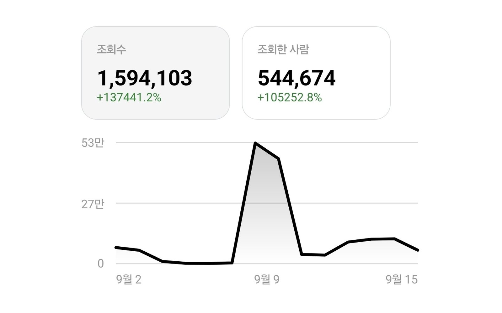

스레드 · 직접 운영 사례
직접 운영 스레드 · 14일간 조회수 약 159만 회
스레드 인사이트 · 14일간 조회수 1,594,103회 · 조회한 사람 544,674명 · 개설 초기
Threads Management
브랜드의 분위기와 고객층에 맞춰 월 20회 이상 글을 발행해요. 조회수에서 멈추지 않고 상품 구매와 문의로 이어지는 계정을 목표로 운영해요.
 WORDS WITH PERSONALITY
WORDS WITH PERSONALITYFor You
스레드를 시작했는데 조회수도 팔로워도 잘 안 늘어요.
일상 글만 올리다 보니 판매로 이어지지 않아요.
스마트스토어·쇼핑몰 주문을 스레드로 늘리고 싶어요.
What We Do
글을 읽은 고객이 상품을 살펴보거나 문의할 수 있도록 연결해요.
누구에게 무엇을 파는 계정인지 정하고 프로필과 소개 문구를 정리해요.
브랜드의 분위기와 고객층에 맞춰 공감 글, 정보 글, 상품 글을 섞어 기획해요.
한 달 동안 20회 이상 글을 발행하며 고객과의 접점을 늘려요.
글을 본 사람이 스토어나 문의 채널로 바로 갈 수 있게 연결해요.
Plans
구성은 하나예요. 1개월과 2개월 중 운영 기간만 골라주세요.
한 달 먼저 운영해 보고 싶을 때
게시물 반응을 살피며 고객에게 맞는 주제와 표현을 조정해요. 그래도 답은 꾸준함이에요. 계정이 자리를 잡고 팔로워와 주문 변화를 제대로 보려면 3개월은 이어서 운영해 보시길 권해요.
Process
지금 계정의 글, 프로필, 반응을 먼저 살펴봐요.
1개월 또는 2개월 중 운영 기간을 정해요.
타깃과 말투, 판매 동선을 함께 정리해요.
월 20회 이상 글을 올리며 반응을 확인해요.
FAQ
네, 1개월부터 시작할 수 있어요. 스레드는 게시물 반응을 보며 방향을 조정해 가기 때문에, 계정이 자리를 잡고 성과를 제대로 보려면 3개월 이상 꾸준히 운영하시길 권해요.
운영 중인 업체 계정을 그대로 운영해요. 새로 시작하는 경우에는 계정 만들기부터 함께 준비해요.
팔로워 수와 매출은 보장하지 않아요. 약속한 발행 횟수를 지키고, 반응을 보며 글 방향을 계속 다듬어요.
문의 내용을 확인한 뒤, 입력하신 연락처로 안내해 드려요. 블로그·스레드·홈페이지 주소를 함께 적어주시면 더 정확하게 살펴볼 수 있어요.